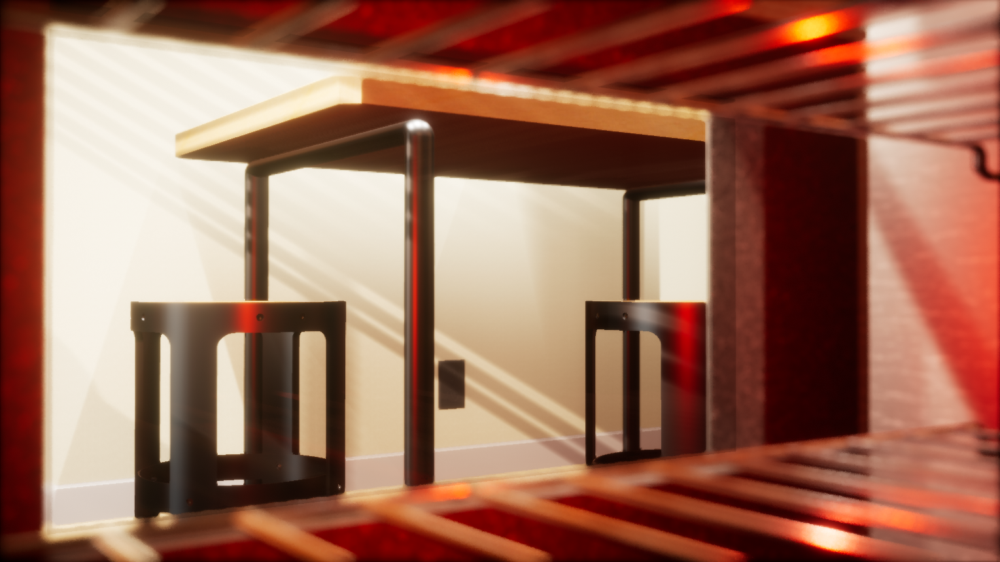
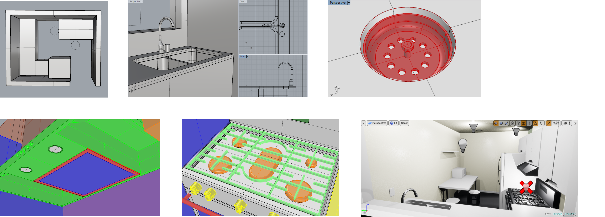

3d modelling, cinematic rendering, and animation of a tiny kitchen
I decided to model a small apartment kitchen as an exercise to teach myself Rhinoceros as well as practice interior design and layout. Prior to this, I primarily used a combination of Sketchup and SolidWorks to model interior spaces and furniture.
The entire space and everything in it (sans the wire racks inside the oven and the window blinds) were modelled and UV mapped by me and then imported into Unreal Engine 4 for texturing, rendering, and animating.

Every appliance is based off a product currently on the market. The cabinetry, dining table, and floor moulding, however, were specially designed for the space and were therefore not dimensioned according to a particular product's specifications.

Software used in this project includes Rhino 5, Unreal Engine 4, and Bitmap2Material. Modelling took approximately 25 hours.